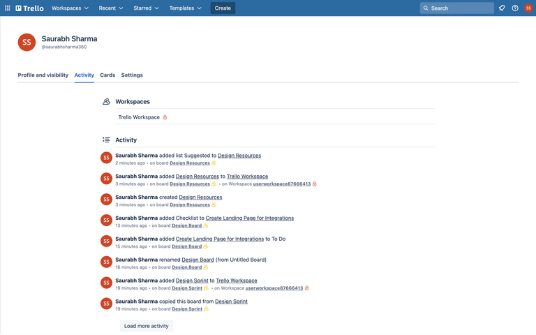
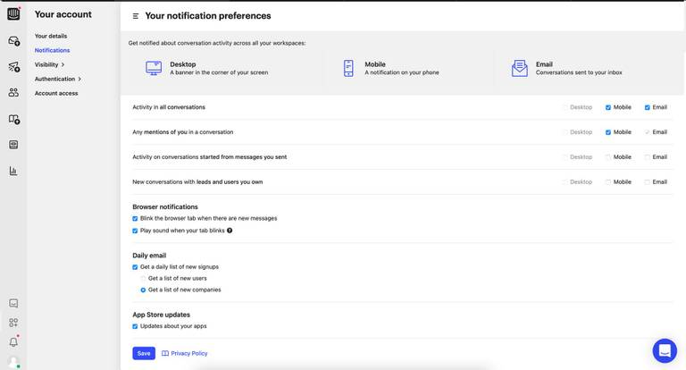
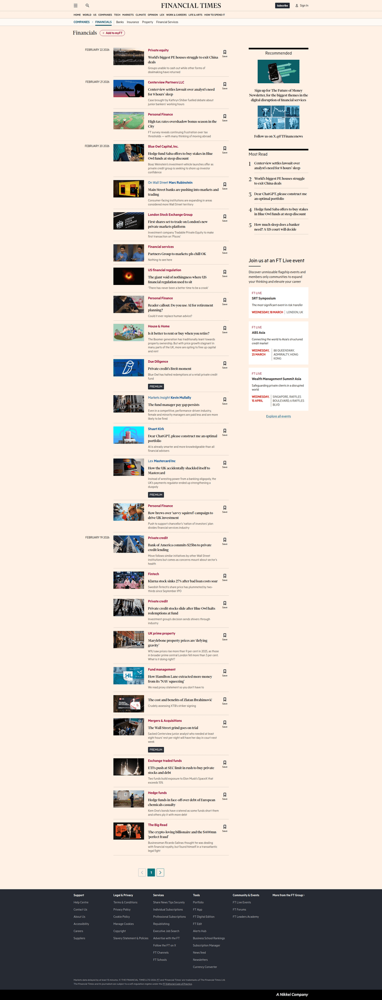

대상: 온톨로지 카탈로그 회사의 8-K·6-K·Form 4를 Pulse에 보여주고, 개인 관심기업 알림은 별도로 제어하는 흐름.
TL;DR피드는 필터가 많은 공시함이 아니라 리서치의 다음 행동을 고르는 사건 스트림으로 유지합니다. Form 4는 동일한 카드 문법 안에서 사실과 범위를 짧게 보여주고, 개인 알림 범위는 설정 카드의 조건부 선택지로 분리하는 것이 가장 적은 UI 비용으로 안전합니다.
현재 상태
현재 Pulse는 큰 제목, 분명한 1차 행동, 검토·저장·숨기기 같은 리서치 상태를 카드 안에 담고 있다. 이 집중도는 유지해야 한다.
적용할 개선
1. 공시 카드는 “알림”이 아니라 사실 기반 사건 카드로 고정 가장 큰 효과
카드 상단에는 티커 · Form · 사건 종류 · 시각을 짧게 두고, 제목에는 판정 가능한 사실만 표시합니다. Form 4는 P/S로 보고된 공개시장 거래만 금액을 표시하고, 나머지는 “신고 제출”로 끝냅니다. 1차 행동은 “공시 보기”, 2차 행동은 “이 공시로 질문”입니다.
왜: Trello의 활동 피드는 시간과 활동을 읽기 쉬운 목록으로 유지한다. KRW.O에서는 그 패턴을 투자 판단용 카드에 맞춰, 사람이 보낸 알림 대신 SEC 이벤트의 출처·형식·시간으로 치환한다.
┌──────────────────────────────────────────┐
│ 내부자 거래 · AAPL · Form 4 12분 전 │
│ AAPL 내부자 거래: 매도 $1.2M │
│ P/S 보고 거래만 표시 · 10b5-1 정보 없음 │
│ [공시 보기 →] 이 공시로 질문 검토 완료 │
└──────────────────────────────────────────┘

Trello — 시간과 활동을 한 줄의 읽기 쉬운 피드로 정리한 패턴. [Lazyweb]
2. Form 4 개인 알림은 토글 하나와 조건부 범위 선택으로 제한
“Form 4 알림” 토글을 켠 경우에만 선택지를 보입니다. 기본값은 보고된 매수·매도만, 선택지는 “모든 Form 4”입니다. 토글을 끄면 범위 선택은 숨깁니다. “카탈로그 피드에는 이 설정과 무관하게 현재 커버 기업의 공시가 보인다”는 설명을 한 줄 붙입니다.
왜: Intercom의 설정 화면처럼 알림 종류와 채널/세부 범위를 계층적으로 보여주면, 사용자가 무엇을 켰는지 즉시 파악할 수 있다. 설정을 두 개의 독립 토글로 두면 ‘끔 + 모든 Form 4’ 같은 모순 상태가 생긴다.
Form 4 알림 [●]
보고된 공개시장 매수·매도만 [▼]
└ 카탈로그 피드 노출은 이 설정과 별개입니다.

Intercom — 종류별 알림과 세부 설정을 명확히 분리한 설정 화면. [Lazyweb]
3. 필터 바 대신 카드 안의 상태 행동과 저장을 유지
Pulse 상단에 공시 필터를 상시 추가하지 않습니다. 사용자는 새 공시를 피드에서 자연스럽게 보며, 필요한 경우 카드의 저장·검토 완료·내일 다시 보기로 자신의 리서치 큐를 만든다. 공시함은 개인 알림의 이력용으로 남깁니다.
왜: Financial Times의 기사 스트림은 날짜·레이블·저장 행동을 조합해 탐색을 돕는다. KRW.O는 뉴스량 경쟁이 아니라 개별 사건을 리서치로 전환하는 제품이므로, 우측 추천이나 복잡한 탐색 구조보다 카드 내부 상태가 더 맞다.

Financial Times — 날짜·카테고리·저장 행동으로 긴 스트림을 읽게 하는 패턴. [Lazyweb]
유지할 점
현재 카드의 강한 제목 대비와 검은 1차 행동은 유지한다.
“왜 이 항목이 보이나요?”처럼 출처를 설명하는 접이식 근거는 공시 카드에도 유지한다.
자동 분석을 암시하지 않는다. 질문 행동은 사용자가 직접 시작한 채팅으로만 연결한다.
카탈로그 전역 피드와 개인 관심기업 알림을 같은 설정으로 보이게 만들지 않는다.
상태별 문구
상태
카드 문구
행동
8-K·6-K
“AAPL 실적·재무 관련 8-K 공시”
공시 보기 / 이 공시로 질문
Form 4, P/S 거래 있음
“AAPL 내부자 거래: 매도 $1.2M”
공시 보기 / 이 공시로 질문
Form 4, P/S 거래 없음
“AAPL 내부자 거래 신고가 제출되었습니다”
공시 보기
정정
“8-K/A 정정 공시” 또는 “내부자 거래 정정”
공시 보기 / 원본 비교(가능할 때)
참고 자료
Trello 활동 피드 [Lazyweb]Intercom 알림 설정 [Lazyweb]Financial Times 금융 스트림 [Lazyweb]
보조 근거: Slack Activity 안내는 상세 보기와 밀도 높은 보기를 분리하고, 개별 알림을 처리 가능한 항목으로 다룬다. 라이브 경쟁사 캡처는 봇 차단(403)으로 보조하지 못했고, 위 이미지는 Lazyweb의 화면 설명을 확인한 뒤 선택했다.